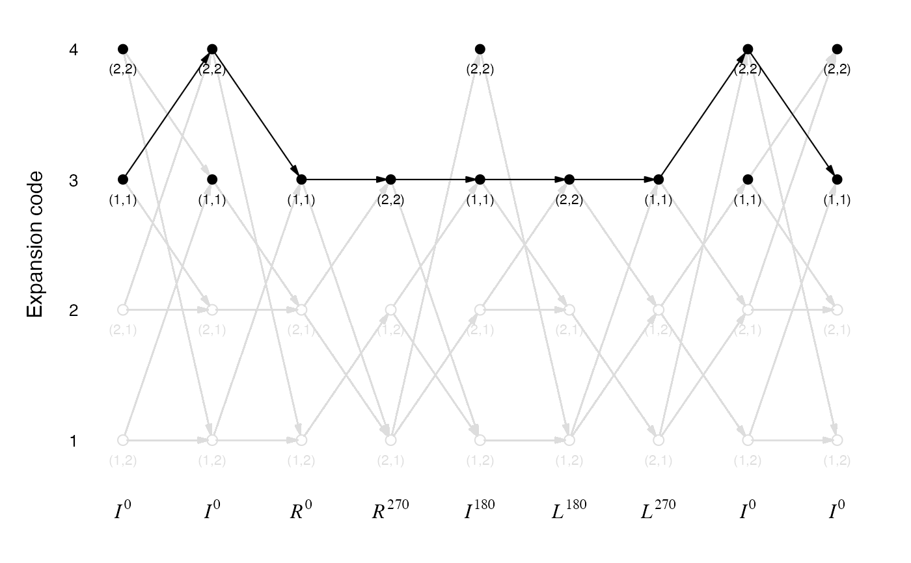
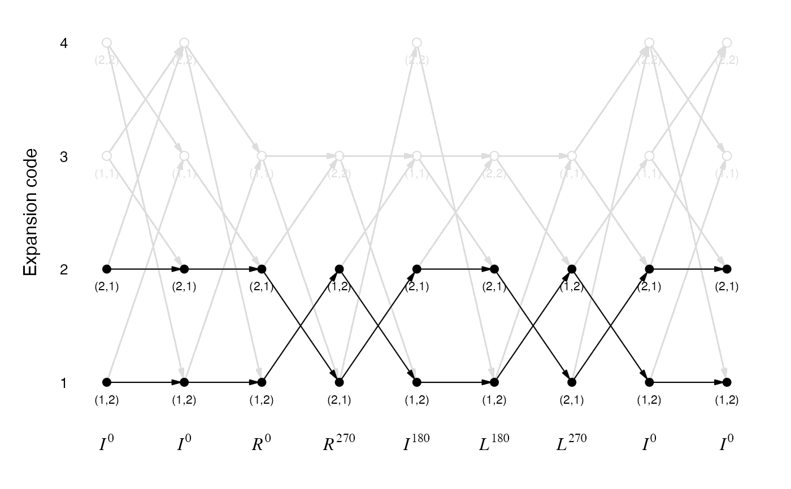

All transverse paths of a sequence
Usage
all_transverse_paths(rules, p)
get_one_transverse_path(rules, p)
plot_transverse_paths(rules, p, type = c("all", "11|22", "12|21"))Arguments
- rules
An
sfc_rulesobject.- p
An
sfc_sequencesequence.pandrulesshould have the same universe base set. Please providepas a small sequence because the total number of all transverse paths might be very huge.- type
If the value is
"11|22", it highlights the paths only via 1-1/2-2 corners. If the value is"12|21", it highlights the paths only via 1-2/2-1 corners.
Details
Given an input sequence with rotations, all_transverse_paths() lists all combinations of expansion
codes from the first letter to the last letter in p (i.e. all possible transverse paths).
get_one_transverse_path() returns one random transverse path.
Examples
# expansion rules for the general 3x3 curves
p = SFC_RULES_3x3_COMBINED@rules$I[[3]]
get_one_transverse_path(SFC_RULES_3x3_COMBINED, p)
#> [1] 4 3 2 3 3 2 1 2 4
get_one_transverse_path(SFC_RULES_3x3_COMBINED, p)
#> [1] 1 1 3 1 2 3 3 4 3
get_one_transverse_path(SFC_RULES_3x3_COMBINED, p)
#> [1] 2 2 2 3 3 2 1 4 1
get_one_transverse_path(SFC_RULES_3x3_COMBINED, p)
#> [1] 3 2 2 1 4 1 3 4 1
#
p = SFC_RULES_3x3_COMBINED@rules$I[[3]]
plot_transverse_paths(SFC_RULES_3x3_COMBINED, p)
plot_transverse_paths(SFC_RULES_3x3_COMBINED, p, type = "11|22")

plot_transverse_paths(SFC_RULES_3x3_COMBINED, p, type = "12|21")

# Hilbert curve
p = sfc_hilbert("I", 11)
plot_transverse_paths(SFC_RULES_HILBERT, p)
 # Peano curve
p = sfc_peano("I", 1)
plot_transverse_paths(SFC_RULES_PEANO, p)
# Meander curve
p = sfc_meander("I", 1)
plot_transverse_paths(SFC_RULES_MEANDER, p)
# Peano curve
p = sfc_peano("I", 1)
plot_transverse_paths(SFC_RULES_PEANO, p)
# Meander curve
p = sfc_meander("I", 1)
plot_transverse_paths(SFC_RULES_MEANDER, p)